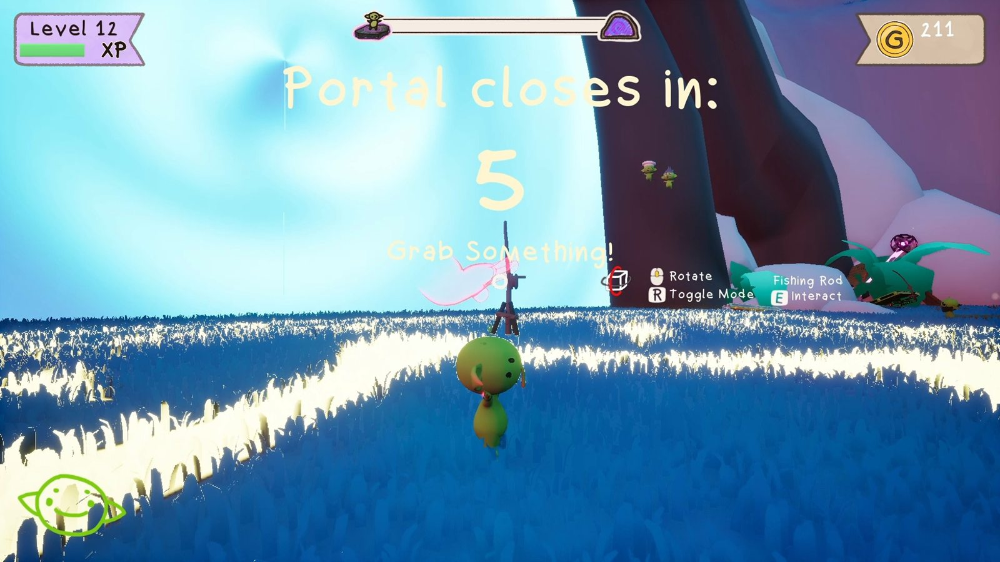
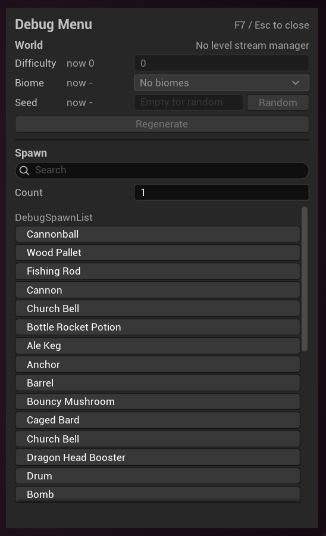

Problem & Goal
Raftcraft runs peer-to-peer over Steam. One player’s machine is the server, there is no dedicated server to fall back on, and everything that matters (the raft, the run, the party’s money) is physics and game state on that machine. Almost all of my work on the project comes from that:
- A raft is dozens of simulated parts welded into one body, and every client has to agree on its shape.
- Players drop in and out. Someone joining late arrives in a streamed level that already exists, next to a raft that’s already built.
- If the host quits, the session shouldn’t end. Another player has to take over with the raft intact.
- Progress lives for three lengths of time (this run, this session, forever), and designers need to choose per variable without writing save code.
- It goes on sale, so saves have to survive Steam Cloud, corrupt files and the same player on two machines.
- Every wipe and level end used to reload the map. Each reload cut the voice chat, re-ran every join check and gave each of the lair’s Blueprints another chance to break.
- It has to run on whatever the weakest player in the party owns, with a host that uploads physics for everyone.

How the Project Changed
I’ve been on it since the repository’s first week in May. The game, the team’s build system and my role all changed along the way, and not everything I built is in the game that ships.
- Build & spawn systems 92
- Multiplayer & run flow 122
- Saves, stats & unlocks 54
- Tools, performance & shipping 91
Show the data
| Week of | Build & spawn systems | Multiplayer & run flow | Saves, stats & unlocks | Tools, performance & shipping |
|---|---|---|---|---|
| 18 May | 1 | 0 | 0 | 0 |
| 25 May | 10 | 0 | 0 | 0 |
| 1 Jun | 18 | 0 | 0 | 0 |
| 8 Jun | 4 | 0 | 0 | 1 |
| 15 Jun | 2 | 0 | 0 | 1 |
| 22 Jun | 2 | 0 | 0 | 0 |
| 29 Jun | 23 | 0 | 0 | 1 |
| 6 Jul | 9 | 2 | 0 | 8 |
| 13 Jul | 0 | 1 | 0 | 0 |
| 20 Jul | 0 | 0 | 0 | 0 |
| 27 Jul | 0 | 0 | 0 | 0 |
| 3 Aug | 0 | 6 | 0 | 1 |
| 10 Aug | 9 | 5 | 2 | 8 |
| 17 Aug | 0 | 2 | 15 | 2 |
| 24 Aug | 1 | 13 | 3 | 2 |
| 31 Aug | 3 | 44 | 0 | 0 |
| 7 Sep | 6 | 12 | 1 | 11 |
| 14 Sep | 0 | 15 | 9 | 5 |
| 21 Sep | 0 | 0 | 4 | 0 |
| 28 Sep | 0 | 4 | 10 | 10 |
| 5 Oct | 4 | 6 | 4 | 13 |
| 12 Oct | 0 | 2 | 1 | 24 |
| 19 Oct | 0 | 1 | 1 | 3 |
| 26 Oct | 0 | 9 | 4 | 1 |
- May–June: carts and a build system. The project started as a physics cart game; the earliest code in the repository is four attempts at a vehicle. My first job was the build system: grab loose props and weld them into one body. I wrote it actor-first, split it into components a week later, and added wheels with generated constraints and axle centre of mass.
- June–July: Build System V4. Parts still had to be special actor classes, and replication was unreliable, so I started a graph-first system that any actor could join. On 30 June I cut it roughly in half to get to a playable loop of place, fuse and detach.
- July: the team picks another build system. On 1–2 July a teammate’s build system landed and the game’s parts were ported onto it, the same day my V4 welding and replication work went in. V4 stayed an opt-in route beside it. In August I wrote a compatibility layer so content could move across piece by piece, then reverted it myself and moved on.
- August–September: the co-op layer. I moved to what the game didn’t have yet: resets without disconnects, late join, host migration, a save system and Steam Cloud. What I’d learned about welding went into client-side fixes in the new build system.
- September–October: shipping. My own achievement system gave way to Steam stats, and I added voice chat with a goblin filter, cosmetic unlocks and stackable hats, localization with a first Swedish pass, profiling tools, graphics presets and baked lighting for the streamed levels. I archived my build systems on 14 September, and in October moved the rest of the superseded code, the team’s and mine, into Legacy folders that the build skips.
- Late October: no more map reloads. With a few weeks to the build for external testers, I replaced every in-session map reload with a session world that rebuilds the lair in place, proved it with a headless four-machine harness, and took it through its first four-player Steam test.


Build System, Four Versions
The goal never changed: players grab loose parts and fuse them into one rigid thing that the physics engine treats as a single body. Each version fixed what the previous one couldn’t do.
- Actor-firstPart and assembly base classes, a carried part becomes the weld root
- ComponentsMass, contacts, graph and weld split out; wheels
- V4Any actor opts in; a server-owned graph replicated as data
- Build ConstructsA compatibility layer for the team’s system, then reverted
From part classes to one component
The first two versions needed every buildable thing to be one of my actor classes, with three meshes each: the visible one, an outer shell for sensing contacts and an inner collider. That was fine for a prototype, but every new prop meant a new subclass, and parts replicated reliably only some of the time.
V4 turned that around. A part is any actor with a UBuildableV4Component. The server keeps a graph of nodes (parts) and connections (welds or hinges), validates every fuse request against it, and clients rebuild their world from the graph. Its first pass had separate authoring components and a lot of machinery that nobody had played with yet. On 30 June I collapsed it to the one component.


Welded islands, not constraint chains
Connecting parts with physics constraints made big structures sag and wobble. V4 welds every rigid island (parts connected by rigid joints) into one compound body under a root part, so Chaos simulates it as a single rigid body. Hinges become revolute constraints between island roots and are rebuilt whenever a root changes. Removing a part unwelds its island first, and when an island splits, each new root gets the old root’s velocity at its own position (v + ω × r) so the halves don’t stop dead.
The root has to be the same on every machine, or clients weld the same parts in different orders. It’s chosen by a fixed preference over snapshots sorted by node id: the part being held during a carry, then the island’s existing root, then an anchored part, then the lowest node id.
Replicating the graph as data
Parts weren’t replicated as actors at all. A late joiner gets a full snapshot of the graph; after that the server sends structural deltas, or a full snapshot when a delta would be larger or doesn’t follow on from the last revision the clients have:
RefreshInitialGraphSnapshot();
const FBuildGraphSnapshot CurrentSnapshot = InitialGraphSnapshot;
const FBuildGraphStructuralDelta StructuralDelta =
BuildSystemV4Replication::MakeStructuralDelta(
LastPublishedSnapshot,
CurrentSnapshot
);
const bool bUseFullSnapshot =
StructuralDelta.FromRevision != LastPublishedRevision ||
StructuralDelta.ToRevision != CurrentSnapshot.Revision ||
EstimateStructuralDeltaPayloadBytes(StructuralDelta) >
EstimateFullSnapshotPayloadBytes(CurrentSnapshot);
if (bUseFullSnapshot)
{
Multicast_ApplyFullGraphSnapshot(CurrentSnapshot);
}
else
{
Multicast_ApplyGraphStructuralDelta(StructuralDelta);
}- Clients apply each delta as a transaction and roll back if it doesn’t fit their graph. Stale deltas are dropped, early ones are queued (up to 32), and a gap that lasts a second triggers a resync.
- Clients can’t call a server RPC on an actor they don’t own, so every player gets a small owner-only channel actor for resync requests, rate-limited to one every two seconds.
- Positions are quantised to 0.01 cm and rotations compressed, scale is implied, and endpoints are derived instead of sent. That roughly halved the bytes per connection.
- 38 automation tests run a server world and a client world side by side in one process, covering sockets, placement, welding, snapshots, deltas, resync and malformed input.
What carried over
None of the V4 code is in the shipping game; it’s archived with its tests. What carried over was knowing where welding goes wrong. In September I fixed client-side welds in the team’s build system: wait until every part of an assembly has arrived before welding (each weld recreates the root’s physics particle), hold the root kinematic while waiting, apply the server’s root rotation before welding, skip welds that change nothing, and hold back a joining player until their raft has settled. The new system’s mass modes (loose, attached, carried) and its weld-to-root approach follow my first prototype.
Two months of build-system work didn’t ship as code.
It shipped as the welding and replication knowledge behind the fixes that did.
Co-op Without a Dedicated Server
Three things kept ending co-op sessions: a wipe disconnected everyone, late joiners fell into a world that wasn’t there yet, and the host quitting ended the game. I fixed them in that order.
Resets that don’t disconnect everyone
When the party wipes, the server travels back into the level. Over Steam sockets that disconnected every client. The cause turned out to be two things at once: the run game mode had never enabled seamless travel, so every reset was a hard travel, and the editor silently turns seamless travel off in play-in-editor unless a console variable says otherwise, so every test until then had been testing hard travel too.
Seamless travel brought its own bug. Clients keep replicated actors they don’t own through the travel, so loose build pieces survived as orphans: the raft “exploding into floating boxes”. The game mode now destroys every actor that isn’t safe to carry across, then waits before travelling:
DestroyTravelUnsafeActors();
// Delayed by wall-clock time, NOT one tick.
//
// The destructions above only reach clients when the net driver next flushes,
// and that runs at NetServerMaxTickRate — 30 Hz by default, so roughly every
// 33ms. A single frame is 8-16ms, so deferring "one tick" could travel before
// a single net update had happened, and the close bunches would never be sent.
// Clients then keep those actors through seamless travel and end up holding
// orphans.
FTimerHandle TravelHandle;
GetWorldTimerManager().SetTimer(TravelHandle,
FTimerDelegate::CreateWeakLambda(this, [this, TravelURL]()
{
UWorld* DeferredWorld = GetWorld();
if (!DeferredWorld || !DeferredWorld->ServerTravel(TravelURL))
{
UE_LOG(LogTemp, Error, TEXT("ServerTravel to '%s' failed."), *TravelURL);
bIsTravelling = false;
}
}), TravelDestructionReplicationDelay, false);Resetting in place, without travel, was the alternative. I estimated 45–55 reset handlers, weeks of work, against half a day to harden travel, and wrote the comparison up for the team. Per-player state that has to outlive the level (colour, last position, which raft you were standing on) lives in a game-instance subsystem keyed by Steam id, and is applied from both login paths, because seamless travel never calls PostLogin. That’s why colours used to reset.
Late join: no pawn before the host’s state
A joining client checks, every 0.1 seconds, that each of these has arrived before it tells the server it’s ready:
- Game stateand a valid session id
- Team datapublished by the host, not defaults
- Worldevery streamed chunk loaded and visible
- Raftthe player’s raft welded and settled
Chunks were spawned with multicasts, which only reach players who are already connected, so I added a replicated list of settled chunks that a late joiner streams from, matched by instance name so it’s safe to apply twice. Each blocker is logged once, and after 15 seconds the player joins anyway with an error in the log, rather than waiting forever.
Designers decide what happens when a player is ready: BP_RunGameMode overrides HandleJoinReady to read team data and decide whether to regenerate the world. What they can’t do is spawn a pawn too early by accident:
/**
* The two pawn-spawning entry points, overridden for one reason: to put
* "no pawn before this machine has the host's state" somewhere a Blueprint
* cannot get around it.
*
* Everything else in the spawn path — PlayerCanRestart, HandleStartingNewPlayer,
* MustSpectate, SpawnDefaultPawnFor — is a BlueprintNativeEvent, so a Blueprint
* override REPLACES the C++ version and one missing Parent call would take the
* gate with it, silently. These two are plain virtuals that Blueprint can call
* but not override, so the rule holds whatever is done above them.
*/
virtual void RestartPlayerAtPlayerStart(AController* NewPlayer,
AActor* StartSpot) override;
virtual void RestartPlayerAtTransform(AController* NewPlayer,
const FTransform& SpawnTransform) override;The first version started the check from HandleStartingNewPlayer. A day later I moved it, because that event is one Blueprint can override, and an override without the parent call would have stopped the check from starting while the hard gate kept refusing the player for good.

Host migration
In a listen-server game the host leaving normally ends the session. Here the run continues: same run, same streamed world, same raft, with riders put back on its deck.
- Hold0.5 s of host silence freezes physics
- Electafter 5 s, every machine picks the same successor
- Hand offthe new host opens a tagged session; the rest join it
- Resumesame run, same world, the raft rebuilt and re-posed
- Hold. A client that hears nothing from the host for half a second freezes every simulated body: physics replication off, velocities saved, bodies kinematic. Not asleep, because a sleeping body wakes at the first contact, which on a deck with a player on it is immediately. Input is disabled too. It’s fully reversible, so an ordinary network hiccup recovers without anyone falling into the lava.
- Mirror ahead of time. During play the host keeps every client up to date with what a successor would need: run index and session id, the world-generation history and settled chunk layout, platform poses every two seconds, and a connection table. Each machine also snapshots the raft and the host’s team data itself, so nothing depends on one last message arriving.
- Elect without talking. After five seconds, each machine picks a successor from its own copy of the table. The timer lives on the game instance, because the engine has already started tearing the world down.
- Resume. The new host republishes the same run index, so no machine sees a run boundary, adopts the stored chunk layout if it was recorded for this map, rebuilds the raft from the snapshot without charging for it, and restores each platform’s pose once the world has streamed in. Platforms stay parked until the returning players are back, for up to 20 seconds.

// Ranks on identity, not connection. The table replicates as one atomic
// TArray, so a machine holds version N or N-1 of the whole thing — and a ping
// ordering changes with every sample, so two machines one version apart would
// elect different hosts and split the party. An id ordering only moves when
// somebody joins or leaves.
FString FConnectionQuality::PickSuccessor(
const TArray<FConnectionQualitySample>& Samples)
{
const FString* Best = nullptr;
for (const FConnectionQualitySample& Sample : Samples)
{
// An id the platform could not supply is one no two machines would
// agree on, so it is not a candidate.
if (Sample.PlayerId.IsEmpty())
{
continue;
}
// Case-sensitive on purpose: the comparison has to mean the same thing
// on every machine.
if (Best == nullptr ||
Sample.PlayerId.Compare(*Best, ESearchCase::CaseSensitive) < 0)
{
Best = &Sample.PlayerId;
}
}
return Best != nullptr ? *Best : FString();
}The platform poses took three tries. Applying them in BeginPlay was too early, because assemblies weld after construction. Applying them on a migration flag failed because the flag was gone before streamed platforms existed. What works is continuous sampling, merged by platform key, where the presence of a record is the signal and each one is used once.
The freeze in step one exists because of what I found on 4 September chasing a raft that tilted and sped up after the host dropped. Unreal 5.8’s physics replication LOD keeps extrapolating a stale target for as long as the host is silent, and every frame overwrites the counter that is supposed to cap that extrapolation, so every replicated body accelerates away from where it was. Locking the platform’s rotation did nothing, because the correction writes rotation straight past the constraints. Holding the bodies kinematic was the only thing that worked.
The first full run was on 16 September: three machines over Steam, the host killed from Task Manager. Both clients had captured the raft on their own, 24 parts each, matching the host’s last capture; the outage guard froze 109 bodies half a second after the host went quiet; the lowest id won the election; the second player was back 8.7 seconds after the loss; and all 13 team variables came through with none unplaced. No crashes.
What the host’s uplink is spent on
In a three-player Steam test the voice went choppy and then both clients dropped. The host log had 5,675 “network saturated” warnings, about sixty a second from the instant the second player joined, and both clients timed out at the four-second limit I had set for host migration. Voice was only the canary: it is unreliable and lowest priority, so it fails first while the game still looks alive. Underneath was the engine’s default ceiling of 100,000 bytes a second per connection, which the project had never set. I raised it tenfold that day to keep the test alive, then took the override out again, because the replacement has to be a number you can defend, and that needs measured demand.
Show the data
| What | Share | KB/s |
|---|---|---|
| Loose build pieces | 43.2% | 41.3 |
| Players (pawn, network physics, controller and state) | 21.8% | 20.8 |
| Loot | 19.4% | 18.5 |
| Packet envelope (bunch headers, GUIDs, new actors) | 11.0% | 10.5 |
| Welded raft members (21 classes) | 2.3% | 2.2 |
The shape is count times frequency, not fat payloads: every class costs 19–44 bytes per update and the largest single class is 10% of the total. So the levers, in order, are distance culling (the project had none, every loose piece sat at the engine’s default 150 m relevance), then update rate, then the network physics component as the one concentrated cost. Welded raft members are nearly free, which confirmed the new build system’s decision to stop replicating movement for them. A fourth player adds 7% per connection and 61% to the host’s total, 307 KB/s. The defensible ceiling from those numbers was 150,000, 38% over four-player demand; the project ships 250,000, set by the teammate who tunes the netcode, with the client-side key raised to match, which the measurement had shown is the one that actually binds. The runbook for repeating the measurement is in the repository, including the three traps that cost two captures: the columns are bits, anything that existed before the trace started lands in an unattributed bucket, and nested rows double count if you sum across levels.
Runs That Never Reload the Map
Hardening travel in August made resets survivable. In late October I removed them: from hosting to leaving, the session stays in one world, and the lair is rebuilt in place.
Why travel had to go
Every wipe and every level end was a seamless travel back into the same map. A host log from the 16 October playtest had 13 of them in one session, each cutting the voice chat for about 0.3 seconds and dropping 574 voice packets to congestion. Before deciding anything I had every travel caller in the project’s 535 Blueprints dumped and read, and the picture was worse than the voice gap:
- The join gate didn’t hold. A client with no game state yet reported ready after 0.4–1.1 seconds, while the host’s chunk chain finished 1.4–4 seconds later.
- Every client missed the first chunk’s spawn multicast on every travel, because it was sent while they were still loading, then caught it up 1.3–3.9 seconds later appended at the wrong end of the layout. My own client crashed three times in the physics collision filter, each within a second of that catch-up.
- Unloaded chunk instances never left the streaming list, and about 40 lair Blueprints only worked because the reload reset them.
I wrote the brief as a question rather than a plan: eliminate server travel, prefer multiplayer correctness and a predictable lifecycle over my own first idea, and build nothing until the open questions were settled. The design that came out of it: one shell map, L_Session, that holds the camp and the lair as level instances; a run transition director on the game mode as the only way to move between runs; the lair loaded as a freshly named instance every run, so a reload never meets a half-unloaded copy of the previous one; pawns respawned rather than parked; a fade and loading overlay as the curtain; and a timeout that falls back to the old travel path, so the standalone maps stay playable and the whole thing is three settings away from being switched off.
One entry point, replicated phases
Blueprints used to call the sessions plugin’s travel node directly from four places. They now call one node, Request Run Transition, with a reason tag, what should change about the world (replay the seed, a new seed in this biome, a new biome) and an optional destination, and the director decides whether that is an in-place rebuild or a travel. Every transition gets an id, replicated with its phase, and every log line on every machine carries [T7 Loading C], so one transition lines up across four logs.
- Curtainlocal fade, 0.5 s before anything moves
- Tear downpawns, raft, parts, loot, then the area
- Waituntil the old instance has left every machine
- Rebuildnew instance name, new chunk chain, players re-gated
- Resumeor travel after 45 s if it never gets there
The join gate is now keyed by transition id: no game state means not ready, and a client waits until its game state’s transition id reaches the one it was gated on. Chunk records carry a layout id, catch-up is sorted into the host’s placement order, and the host rounds chunk rotations to what the network will carry before placing them. That last one came from the first Steam test of the diagnostics, where host and client layout checksums never matched: rotators replicate as compressed shorts, so the two sides had been placing chunks up to 0.003° apart all along.
The spawn bugs were the engine’s habits. On arrival it stores a start spot before the area exists, finds nothing, and falls back to the world origin, which in the shell is under the raft pad. So the game mode now only honours a real player start in the current area, picks a distinct free start per player per transition, and holds any client that reports ready before the host’s own area is visible, because a client can finish loading first and be spawned onto nothing.
/** Which area the session world shows, under which instance name. */
USTRUCT()
struct FRunAreaRecord
{
GENERATED_BODY()
UPROPERTY()
TSoftObjectPtr<UWorld> Level;
/** Authored by the server and used verbatim everywhere, so actors
* inside resolve across the network. */
UPROPERTY()
FString InstanceName;
/** A new world: what the previous run loaded beside its area (its
* biome's lighting) goes before this one comes. */
UPROPERTY()
bool bNewWorld = false;
};
/**
* Replicated as one value rather than as load and unload events, so a
* late joiner and a client that missed a change both end up with the
* current area. A fresh name per run means a reload never meets a copy
* of the previous run that a machine has not finished unloading.
*/Four machines on one PC
Nobody can playtest a hundred wipes. So the day the in-place path first worked, I built a harness that runs a host and up to three clients headless on one PC: no rendering, no sound, no Steam, a script command inside the game that waits for a phase or a pawn count, runs console commands and logs, and PowerShell around it that launches a scenario, collects every machine’s log and writes a per-session analysis. It lives outside the repository.
- First run, 28 October: 13 scenarios, 35 game processes, 118 transitions. Every transition reached Playing on every machine; 231 of 231 client layouts matched the host’s checksum; 355 spawns, each on its own free start; actor and object counts flat over 22 wipes. Rejoining during a wipe, joining during the first load, the timeout fallback and host migration inside the shell all passed.
- What it found were four Blueprint bugs that travel had been hiding: the lose screen was never removed (3 widgets became 9 after five losses), per-pawn helper actors leaked on clients (5 became 93 over 22 wipes), a death during a wipe started a second wipe and cost a life, and the character’s per-tick movement RPCs were marked Reliable. That last one meant 256 unacknowledged bunches after 4.3 seconds of host silence at 60 fps, or 1.8 at 144, which dropped every client and started a host migration. I fixed all four in Blueprint. The retest had the widget and helper counts flat, 5,913 errors down to zero, and a scripted three-second host freeze with clients at 144 fps dropped nobody.
- Stress: 100 wipes with three clients in 17 minutes, 101 of 101 checksums matched, wipe time flat at four to five seconds. It also found that memory grows about 5 MB per wipe with a flat object count, which is on the watch list; a real session has 20–40.
c1_wipes procs 2, host transitions 5, in-place 4, travel requests 0
c3_rejoin procs 4, host transitions 10, in-place 9, travel requests 0
c4_timeout_fallback procs 2, host transitions 9, in-place 2, travel requests 0
c5_early_join procs 3, host transitions 3, in-place 2, travel requests 0
c6_migration_lair procs 3, host transitions 2, in-place 1, travel requests 0
c8_level_ends procs 3, host transitions 8, in-place 7, travel requests 0
c9_host_quits_midstart procs 3, host transitions 2, in-place 1, travel requests 0
c10_freeze procs 3, host transitions 3, in-place 2, travel requests 0
c14_stress procs 4, host transitions 45, in-place 44, travel requests 0
processes 36
host transitions 111 | in-place teardowns 91 | travel requests 1
transition x machine reaching Playing 344
placements 338 | covered 0 | shared start within a transition 0
client layout comparisons ok 202 | mismatched 0
early-ready holds 89Level ends followed the next day, five to seven seconds from teardown to playing against 6–20 by travel, with each biome’s lighting sublevel retired on every machine, and then the camp joined the shell as a start area, so even lobby to game no longer travels. Removing travel also removed the voice gap: the 0.3-second cut had been the project’s own teardown releasing the talkers, and with nothing to tear down there is nothing to release.

The first Steam test
On 29 October four of us played the new flow over Steam for forty minutes: six runs, a real wipe, the host quitting mid-session and a client taking over by migration, then that client hosting fresh. No crashes. The producer’s bug list, triaged against all four logs, split cleanly. “Wiping sends you to a new biome” was a debug key. The real one was mine: the raft never came back on the migration host, because the resume flag was cleared when the shell finished loading, before the lair instance had even been requested, so the pad saw an idle session and spawned nothing. The same flag had quietly stopped every takeover since the shell went in from adopting the stored chunk list, so each new host had been generating a different lair from the same seed. Both now read a latch on the game mode that holds for exactly the resumed run; headless, the new host rebuilt the 22-part raft and adopted the layout with the same checksum on all three machines.
The rest were widgets outliving the actors that made them, which a reload used to clean up for free: a rotation-mode widget caching a dead pawn produced 94,000 warnings on one client. Each is fixed the same way, in Blueprint: whatever creates a widget removes it in its own End Play.
Saves That Survive Travel and Host Changes
Designers add variables to two Blueprints, BP_TeamData and BP_PlayerData, and pick each one’s lifetime from the Category dropdown: Run, Session or Permanent. That’s the whole integration.
In the game today, BP_TeamData holds 13 variables (money, remaining lives, unlocked lairs, beaten biomes, saved parts), all Run or Session. BP_PlayerData holds 19, mostly Permanent: volumes, graphics level, language, XP and the goblin’s hats, face and ears.
- RunCleared when the party starts a new attempt
- SessionCleared when a new game session starts
- PermanentPlayer data only; written to disk and Steam Cloud
A dropdown that decides the lifetime
Category is editor-only metadata, so a packaged build can’t read it. When a save container Blueprint compiles, it walks the properties the Blueprint declared, parses each Category and bakes a name-to-lifetime map into the class default object, which is cooked with the asset. C++ members are skipped by declaring class, not by name, so engine machinery can’t end up in a save. A Category that isn’t one of the three is filed as None and the designer gets a toast in the editor, because quietly treating a typo as Run would wipe something they meant to keep.
ESaveLifetime USaveContainer::ParseLifetime(const FString& CategoryText)
{
// A Category can be a path like "Save|Run", so only the last segment
// decides the bucket.
FString Leaf = CategoryText;
int32 SeparatorIndex = INDEX_NONE;
if (CategoryText.FindLastChar(TEXT('|'), SeparatorIndex))
{
Leaf = CategoryText.Mid(SeparatorIndex + 1);
}
Leaf.TrimStartAndEndInline();
// FString comparison is case-insensitive, so "run" works as well as "Run".
if (Leaf == TEXT("Run")) { return ESaveLifetime::Run; }
if (Leaf == TEXT("Session")) { return ESaveLifetime::Session; }
if (Leaf == TEXT("Permanent")) { return ESaveLifetime::Permanent; }
// Not chosen yet means Run, so nothing quietly accumulates.
if (Leaf.IsEmpty() || Leaf == TEXT("Default")) { return ESaveLifetime::Run; }
// A typo must stay distinct: reading it as Run would wipe a variable
// somebody meant to keep.
return ESaveLifetime::None;
}Who owns which data
- Team data belongs to the host. It replicates to clients as a subobject of the game state and never touches disk. On a client, a write guard snapshots the host’s values when they arrive and, after each frame’s actors tick, reverts any local Blueprint write, logging it once. A replicated revision counter lets late joiners tell real values from untouched defaults, and an async
Wait For Team Datanode replaced the delay nodes Blueprints had been using. - Player data belongs to the player’s machine. It is never replicated, and ticking Replicated on a player variable is flagged at compile time. My first version had clients publish their permanent data to the server; a week later I removed that, so a player’s save never leaves their machine and anything others need to see lives in team data or live game state.
- Boundaries come from the session id and run index. A boundary is any change in either, not an increase, because joining a different host can give you a lower run index. Repeats are ignored, so a host change or a reconnect that republishes the same pair clears nothing. Permanent data is saved before anything is cleared.
Steam Cloud and corrupt saves
- One variable at a time. Permanent data is written per variable, keyed by name, so renaming or retyping one variable in a later patch loses only that variable, and the load reports which.
- Cloud first, decided once. The shipping build saves to Steam Cloud through the synchronous remote-storage API, so it also works during shutdown. Whether to use the cloud is decided on the first read and fixed for the rest of the process. Otherwise a load that ran before Steam was up could be followed by a write once it was, putting an empty save over the player’s real one.
- Quarantine. A save that won’t load is copied byte-for-byte to a local
_Unreadableslot (never the cloud, which would spend the player’s quota) and the original is removed, so the same bad file doesn’t fail every launch on every machine. If the copy fails, all writes stop for the session so the only copy survives. - Rescue. A save written before Steam Cloud was switched on is uploaded before the first cloud read, so playtesters’ existing saves didn’t look wiped.
Steam Stats and Cosmetic Unlocks
Gameplay reports what happened (a jump, a level finished without building) as a gameplay tag. Project settings map tags to Steam stats, and Steam’s own progress thresholds unlock the achievements.
August: my own ledger
Achievements were DataTable rows, and a local ledger was the source of truth with Steam and Epic as mirrors, so it worked in the editor and offline. It had per-run and compound achievements and progress toasts, and generated the Steam ini.
September: Steam is the truth
The local cache and Steam ended up fighting each other, so I replaced it. Counts now live only in Steam stats, written through ISteamUserStats. The local cache, the achievement queries and the ini generator are gone, and the code shrank by more than a third.
- One machine counts for one player. A report always means “this happened to me”. A team event goes to the host, which multicasts it so every machine reports it for its own player.
- Reads guard writes. Adding to a stat reads it first, and a failed read means no write, so a total Steam hasn’t loaded yet is never overwritten with a made-up one.
- Resets in the right order. Run-scoped stats reset at the save system’s boundaries: store, zero, store again. Steam evaluates unlocks when stats are stored, so zeroing a peak before it’s stored would silently skip the achievement.
// MANDATORY, and first. Steam evaluates achievement auto-unlock at StoreStats,
// not at SetStat, so a run-scoped stat zeroed before its peak has been stored
// is a threshold that silently never fires.
StoreNow();
for (const FSteamStatBinding& Binding : FlatBindings)
{
const bool bMatches =
(Binding.Reset == ESteamStatReset::Session && bClearSession)
|| (Binding.Reset == ESteamStatReset::Run && bClearRunScope);
if (bMatches && FSteamStatStore::TrySetStat(Binding.SteamStatName, 0))
{
bUnstoredChanges = true;
}
}
// Store the zeros. Without this they never leave the process.
StoreNow();The designers’ achievement list was five sentences, like “travel x metres on just the default raft”. The rules I set for them: a streak lives inside one run and resets on any weld, loose parts on the deck are fine, distance is measured in the horizontal plane so falling off doesn’t count, and the raft is measured once on the host as a team stat so everyone aboard gets credit. A server-only tracker component on the raft samples it twice a second with a teleport cap and reports growth of the record rather than every sample, which is what makes Steam’s 30-second upload throttle safe to live with. 13 stats are bound today, all of them wired by the designers in project settings.
Cosmetics build on both systems. A designer can lock any row of a cosmetics DataTable behind a Steam achievement, a stat reaching a value, or an Unlock.* tag fired from Blueprint; 37 cosmetics currently unlock through tags. Unlocks are checked whenever a stat changes or Steam stores stats, saved straight away as permanent player data, and handed to the UI once, so a popup and the end-of-run screen never both show the same hat. The editor gets a one-line picker for table and row.


Stacking hats, and seeing each other’s
The mirror’s hat tab is really hats, hair and face wear, and the designers wanted them to stack unless they clash. The worn list is now a list, saved as permanent player data, with two ways to decide a clash that a designer switches between: slot tags on each row (11 zones, none assigned by me), or the meshes themselves. The mesh test voxelises both items in the hat anchor’s space and calls it a clash when they touch over 3% of the smaller one’s surface or one hides half of the other from every side. It matched an offline measurement on all 2,926 pairs of the 77 hat meshes and costs about 0.4 ms per pair. My first play test of it looked like a mirror bug, every old hat piling up on the goblin: a component can only be destroyed by the actor that owns it, so the clear now goes through the character.
Three days before the Steam test the team reported that nobody could see the host’s outfit, and clients saw each other’s only sometimes. From a graph dump and a headless probe of the component’s defaults, three causes: the customisation component never replicated, so its five replicated names never left the server and looks only travelled as one-shot multicasts to whoever was already connected; the host never sent its own, because its check ran in BeginPlay, before possession; and the OnReps called a server RPC, which the engine drops from anyone but the owner. I rewired the Blueprint so looks are pushed from the replicated names when a pawn is possessed and drawn by the OnReps, and deleted the server-apply path.
Saved Rafts and the 64 KB Limit
The party’s raft carries over from one lair to the next. A teammate built the first version; I moved its storage into team data, so host migration carries it and clients can read it, and then it broke a real session.
In a three-player playtest, six stored rafts added up to 71,989 bytes. Team data replicates as part of the game state, a reliable bunch can’t be larger than 65,536 bytes (its size field is 16 bits) and can’t be split, so the engine refused the whole bunch. The run index was in the same bunch, so every client stopped receiving run boundaries and lost control of their character for the rest of the session.
- Only the most recent raft was ever read, so storage became one raft, not a list.
- Each capture is measured with the save archive before it’s published: refused at 65,536 bytes with a clear error and the previous raft kept, and a warning from 32,768. Real rafts are 36–64 parts; the largest measured 39,493 bytes.
- A capture identical to the stored raft isn’t republished. Players pull the save lever again and again, and those republishes had been most of this data’s network traffic.
- Four automation tests pin the limits, including a real 64-part raft and the six-raft payload from that playtest.
Rebuilding a saved raft costs money for every part the level’s material shop didn’t already provide. The bill is a pure function that takes the free stock as an argument, because that pool only exists on the host, and a client reading it would price every part. The stock is replicated on the rebuild pad, so host and client show the same price. In Blueprint, the designer’s lever is just BaseCost + CostPerPart × GetRebuildUnaccountedPartCount.
// What the material shop put in this level and nobody has used yet. Comes
// in as an argument rather than being read off UFreeMaterialPoolSubsystem,
// because that pool only exists on the host: a client reading it would find
// it empty and price every single part.
TMap<UClass*, int32> FreeByClass;
FreeByClass.Reserve(FreeStock.Num());
for (const FFreeMaterialStock& Entry : FreeStock)
{
if (Entry.PartClass != nullptr)
{
FreeByClass.FindOrAdd(Entry.PartClass.Get()) += Entry.Count;
}
}
for (const TPair<UClass*, int32>& Pair : NeededByClass)
{
FSavedPartBillLine& Line = Bill.Lines.AddDefaulted_GetRef();
Line.PartClass = Pair.Key;
Line.NeededCount = Pair.Value;
Line.FreeAvailable = FreeByClass.FindRef(Pair.Key);
Line.UnaccountedCount = FMath::Max(0, Line.NeededCount - Line.FreeAvailable);
Bill.UnaccountedPartCount += Line.UnaccountedCount;
}
Voice Chat Over Steam
Three earlier attempts at proximity voice were parked in Legacy rather than deleted, since none of them were mine. What shipped is the engine’s own VOIP, wired where it can’t be forgotten, plus a goblin filter that each listener can switch off.
- The talker lives on the player state, not on a component a designer has to remember to add, which is how the first attempt died. The state re-points it at whichever pawn it owns, from the three events that arrive in no fixed order. Nothing in the engine registers a local talker, so the game does, on the first key press. First proof over Steam was on 9 September, two machines, and the first run was silent: a talker with attenuation but nothing to attach to plays nothing at all.
- Push to talk is one config key, and the project had it in the wrong ini, where the engine never read it. Moving it was the whole fix, and a second key in the same section had been ignored for the same reason.
- The goblin filter is applied at playback, per listener. A project setting maps a tag to a source effect chain (the one in the game is ring modulation, a waveshaper and a filter, which I built), the player’s choice replicates on their state like their colour, and each machine decides whether to apply it, so any player can make everyone sound normal for themselves. The engine only assigns non-null settings, so the off switch has to be an empty chain asset, never null, or the filter stays on.
Travel kept breaking it. A four-player test in which every death crashed every client turned out to be a voice packet decoded during the travel: the engine creates a synth component for it on the world being torn down, and garbage collection reaches it after the scene is gone. My first sweep ran at the start of travel and missed packets that arrived 24 milliseconds later; the one that works runs from the world-cleanup delegate and filters on the world the delegate hands over, because by then the kept actors have already been moved into the new world and GetWorld() lies. That fix then muted every client after a travel: the old controller’s End Play unregistered the talker 76 milliseconds after the new world had armed it, so the release now checks first whether the controller has been superseded. And a listen server never re-registered remote talkers after a travel at all, because the engine only does that at login; the player state now does it itself.
Performance on the Weakest Machine
From 12 October the brief was “playable on the weakest machine possible”, a few weeks before release. The method: profile first, read only what the profile names, one hotspot per session, config changes late and code changes early.
Where the frame goes
The baseline was my own machine pinned to four cores: GPU-bound at 27–31 ms, around 35 fps, with the game thread at 7 ms. Of about 3,900 draw calls a frame, 2,090 were shadow depths, and the camp cost the same GPU time as the lair with an idle game thread, so the cost was the rendering setup rather than the scene. An A/B through the console settled it: shading quality from 3 to 0 moved nothing, shadow quality from 3 to 0 took the GPU from 27.3 to 12.0 ms.
| Shadow quality | GPU ms | fps | Shadow depths ms | Shadow draw calls |
|---|---|---|---|---|
| 3 (Epic, what everyone had) | 27.3 | 34.7 | 13.2 | 2,380 |
| 2 | 22.6 | 41.5 | 9.3 | 1,460 |
| 1 | 18.9 | 48.8 | 6.6 | 1,080 |
| 0 | 12.0 | 75.8 | 0 | 0 |
What that revealed was a settings bug. The one “Graphics Quality” dropdown set six scalability groups and never shadows, anti-aliasing, post-processing or foliage, so every player had been running Epic shadows whatever they chose, and the level they chose was being synced through Steam Cloud onto their other machines. The graphics subsystem below came out of that, with a rule I set for it: everything auto-detection can set must be reachable in the menu, so nobody sees the game look one way on a friend’s machine and can’t get it there on their own, even at a lower frame rate. I built the row widgets and rewired the settings screen myself: 11 groups and a render scale with an auto option, instant apply for everything except display mode, and “Use recommended settings” instead of a re-benchmark. I left the shadow thresholds alone on purpose, since the artist responsible wanted to look at shadow cost first; the team then turned dynamic shadows off project-wide.
Every playtest is a measurement
- Performance summaries. Development builds write one CSV row per second (frame, game thread, render thread, GPU) with the machine’s specs at the top, and log averages, p99, hitches and stalls per level. A hitch is a frame over the larger of 50 ms and twice the median; anything over a second is a stall and is kept out of the averages. A full per-pass engine profile runs alongside, so every playtest produces data by default and testers only have to send a folder.
- Trace capture from the menu. Testers record an Unreal Insights trace from tick boxes in the main or pause menu, so a slow playtest machine sends back a trace instead of a description. My first real capture, 2.3 GB over six minutes of a Steam build, was unreadable: a counters channel started mid-session defines its stats once, the always-on profiler had already defined them, and Insights asserts. The rule since is one two-minute baseline per machine, not extra channels in case.
- A crash the editor can’t show you. The first Steam build with the full profile crashed at frame zero, three launches out of three, because a profiler category for shader-precache compiles was switched on while a compile was already in flight. My local run never hit it, which is why a local run is not proof.
- Playtest mode.
-Playtestmakes a Development build look like Shipping to testers (no debug drawing, keys or menu) while keeping full logging, because the build server’s engine can’t turn logging on for Shipping. I set it up as a second launch option on the Steam test branch. - Graphics presets. The engine benchmark runs on first launch and its scores are saved with a hardware fingerprint. Recommendations are recomputed from the scores at every launch, labelled “(Recommended)” across 11 settings groups, and the benchmark only runs again when the fingerprint (GPU, CPU, threads, RAM) changes.


Four machines, then a laptop
With CSVs from a four-machine playtest the picture changed: the render thread was the limit on every machine, 12–17 ms in the lair, with the GPU a co-limit only on the weakest card, and 6–7% of frames hitching on shader compiles and synchronous loads. Then a teammate’s laptop, an RTX 2070 Max-Q, sent three traces at Low, High and Cinematic:
- 70% of the GPU frame at Low was a magic mirror placed in the camp and the lair: two 1024² scene captures of the whole level, every frame, for the entire run. 9.2 of 13.1 ms at Low, 39.6 of 71 at Cinematic. Fixed-size captures are also why the Low preset’s half resolution barely helped.
- The water blinked at Low because its edge ripple reads the distance to the nearest surface, and at the lowest global-illumination setting no distance field is built, so the node returns zero everywhere and the whole surface pulses. I had never edited a material before; the fix was three nodes that gate the ripple when there is no field, made in its owner’s asset with their agreement.
- After a minute at full load the laptop’s GPU dropped to a quarter clock for a few seconds every 6–10 seconds: no frame cap and no VSync. And auto-detect had rated it Epic at 100%, so the engine’s thresholds are too optimistic for this content.
The report went out in the team’s format with each finding addressed to the asset’s owner, under two rules: say what is wrong and where, not how to fix it, because you don’t know their intent or workflow; and change nothing in their assets. Next on the list is buoyancy: about 40 water actors ticking every frame, 120 water-level queries per floating body, five million array reads over a session, which is interpreter overhead rather than maths.
The crashes that were GPU hangs
For three weeks in September the “client crashes” in multiplayer tests were GPU device hangs with the same fingerprint on four machines and two GPU generations: a page fault in the ray-tracing dynamic geometry build. My first diagnosis blamed a 5.8 scalability default that put skeletal meshes into ray tracing; setting it back changed nothing, because that pass is fed by many kinds of geometry, each with its own switch. The only pass actually asking for a ray-tracing scene was Lumen’s hardware path, so one project setting turned it off and Lumen fell back to software tracing, which the project was already set up for. Verified on all four machines on 15 September, and still off.
Tools and Release Prep
The rest is what a small team needs to find problems and ship: spawning driven by data, a way to read Blueprints as text, logs from several machines, a debug menu that works in a packaged build, and a repository cleared of dead code.
Part spawning from the catalog
Pit stops scatter random raft parts. The first spawner needed hand-built lists per spawner; my second version reads the part catalog other teammates maintain, so adding a row makes a part eligible. A designer picks categories and tier weights (Common 70, Rare 25, Epic 5 by default), and each tier’s weight is split evenly among its parts, so adding parts to a tier doesn’t change how often that tier appears. Placement can be strict, adjust to fit, or search upward and forward for a free spot that avoids the world and everything placed in the same request. It also spawns continuously and fills areas, with 15 automation tests on selection and the catalog query. An early version read a Blueprint struct by matching generated property names; I replaced it with typed C++ rows two weeks later.
Reading Blueprints as text
A Blueprint’s logic can’t be recovered by searching its .uasset, which was a large part of why one travel bug took so long to find. I wrote a commandlet that dumps any Blueprint to text: parent class; variables with their type, Category, default and replication flags; and every graph with its nodes, resolved call targets, pin values, links and RPC flags. Category is in there because it decides a save variable’s lifetime. It runs safely next to an open editor, it’s now the documented way to answer Blueprint questions in the repository, and it’s how I checked the Blueprint details on this page.
Logs from several machines
A teammate wrote the original log system, which writes a file per gameplay tag. I made it something to rely on in multi-machine playtests: cached file writers behind a lock instead of reopening the file on every line, UTF-8 that can’t flip encoding mid-file, net mode and frame columns with the process and PIE instance in the folder name, per-tag severity overrides from config, a compile-time switch that removes it from Shipping, and 9 automation tests.
A debug menu that works in a packaged build
The old debug menu had died quietly: nothing called it, every class its catalogs pointed at had been deleted, and its folder was excluded from cooking, so it had never worked in a Steam build at all. I replaced 3,300 lines of it with a Slate menu on F7: spawn any actor from lists the team keeps as data assets, server-validated so a client can’t spawn what isn’t listed, plus a host-only world panel to read and set difficulty, biome and seed and regenerate the world in place. It ships with no lists. While there I found that the world seed was the CPU’s cycle counter, a 32-bit timer that turned “random” into the current seed plus elapsed time, and changed both the menu and the level streamer to roll a real one.

Clearing out the dead code
Before the release push I audited what in the project was actually live: 688 Blueprint graphs dumped and traced from the maps that ship, and every class reference in C++ checked. 261 of the 656 Blueprint assets were unreachable, along with 23 functions, 46 events and 84 variables inside live ones, two gigabytes of unused content and 27 class redirects nobody needed. The rules I set: a Legacy folder works as a delete, so every reference into it is removed rather than rerouted; paths inside it mirror the originals so anything can be dragged back; and nothing of anyone else’s goes without their sign-off. 218 files moved as pure renames, 53 config lines went, and I fixed the shipped Blueprints that broke once Legacy stopped loading, until 540 of 543 compiled. Legacy holds 56,000 lines of C++ now, about 31,000 of them mine.
Localization from nothing
Nothing was set up for translation when I started on it on 25 September, and I had never localized a game. A dry-run gather found 955 words, the two fonts had 85 and 80 glyphs with no accented letters, and 24 Blueprints built their on-screen text out of strings, which no gather can see. I converted those by hand, with one rule for the team: if the player can see it, it’s Text; if code compares it, it’s a Name. Swedish was the pilot: 607 entries exported, a translation imported and compiled, and the language menu fixed to actually set the culture. Translators work from the exported files; I translate nothing myself.
The glowing raft
In a multiplayer playtest the raft and the players glowed, on every machine including the host’s. Levels are built from chunks, each baked on its own as a standalone map and then streamed in moved and rotated. Baked lighting on scenery is stored per mesh and moves with it. Lighting for moving objects isn’t: it’s baked into a volumetric lightmap that can neither move nor rotate, and the scene holds only one. Anything spawned or picked up after a baked chunk streamed in was lit from that chunk’s misplaced volume, which in one Lava chunk held a strong white light 22 m from where the raft starts.
There was a code workaround: the level streamer could give each chunk a new build-data id so its volume never loads. We fixed the content instead, so baked chunks work by construction. Every chunk now bakes sparse volume lighting samples instead of a volumetric lightmap, r.IndirectLightingCache=0 stops the renderer reading those samples, and I rebaked all 62 chunks at Production quality. The bake had to run through the editor world, because the stock bake commandlet crashes when it saves a map containing a landscape, leaving the map and its lighting data out of step.

I also moved the project from Unreal 5.7 to 5.8, which meant fixing the bundled plugins and replacing a network physics component subclass that 5.8 no longer lets you link against.
The Blueprint Side
The C++ is the part a diff shows. 136 of my 359 commits touch Blueprint or map assets, 69 of them nothing else, and some of the work that mattered most was done in graphs, usually in Blueprints the C++ exists to serve.
- Run flow. In
BP_RunGameMode: the Handle Join Ready override that decides what a late joiner gets, the all-players-dead check that replaced a pawnless player counting as alive (found in a four-player freeze where a revive landed 314 ms before a wipe and left every client at 0.4 fps with no physics bodies), and the switch of wipe, level end, lobby start and debug win to Request Run Transition. InBP_LevelEndController, an End Play that removes the end-sequence widgets and restores the HUD, since nothing reloads the world to do it any more. - Host migration’s Blueprint half.
BP_GameInstancebinds the migration events to session creation and a tagged session search with retries, so a follower finds the new host without being Steam friends, and now hosts straight into the session world. Eight Blueprints that read team data behind Delay nodes were rewired to the Wait For Team Data node. - The player.
BP_PlayerControllercarries the local-pawn and run-teardown events, the voice filter keys, the saved-raft levers and the lose screen’s cleanup. OnBP_PhysCharacterBasethe three per-tick RPCs went unreliable and the other 22 stayed reliable, and its hat components are cleared through the owner.BP_PlayerDeathgot a respawn that searches upward for a free capsule instead of forcing the player into the raft. - Save containers and cosmetics.
BP_PlayerDataandBP_TeamDataare the two containers designers fill in.BP_GoblinCustomisationwent from a single hat to a worn list, then to replicated looks with OnReps, and the mirror widget followed it. - Settings and tools UI. The graphics rows, preset and “Use recommended settings” in
WBP_Settings, the trace capture panel with a caption on every box, the language menu, and the Steamworks launch options that give the test branch a Debug and a Playtest launcher. - Content. 62 streamed chunks moved to sparse volume samples and rebaked, three lever Blueprints that no longer load on clients, the goblin voice filter chain, a water material’s ripple gated against a missing distance field, 24 Blueprints converted to localizable text, and the parts catalog migrated from a Blueprint struct to a native one with its function library repaired by hand.
Most of this started from reading graph dumps of other people’s Blueprints, which is why the dump commandlet exists.
Results
- A wipe resets the attempt without disconnecting anyone, and late joiners arrive into the existing world, team state and raft instead of an empty level.
- When the host leaves, the party elects a new host, reconnects and continues the same run with the same raft.
- Designers add saved data by picking a Category in a dropdown. Saves sync through Steam Cloud, and a corrupt save is set aside instead of failing every launch.
- Wipes and level ends rebuild the lair in place in four to seven seconds, with no map reload and the same layout on every machine, proven over 229 scripted transitions and the first four-player Steam test.
- Voice chat works over Steam with proximity, a goblin filter any listener can switch off, and no gap at a reset.
- 13 Steam stats are bound for the achievements, and 37 cosmetic unlocks run through the same systems. Hats stack, and everyone sees everyone’s.
- The saved raft can no longer take a session down: its size is checked against the network limit before it’s ever sent.
- The frame is measured, not guessed. Every tester build writes per-second performance data with the machine’s specs, and the two largest costs found, shadows at half the GPU frame and a mirror at 70%, went to their owners with numbers.
- Testers record their own performance traces, and graphics settings start from a benchmark of their machine with every value reachable in the menu.
- Superseded systems, mine included, are archived where the build skips them, so new code isn’t written against dead APIs.
What I’d Change
- Get it playable, and agreed on, before it gets big. V4’s first version had editor authoring, rollback and 18 tests before anyone had played with it, and in the end the team built on a teammate’s simpler system that content was already moving to. A playable slice and a conversation in week one would probably have saved most of June.
- Keep the tests through the merge. To keep my merge to main small, I deleted the save and run-flow tests and a two-process network test. Nothing covers saves, Steam Cloud or host migration now. They belong in a test module that merges with the code.
- Budget replicated data from day one. The raft size limit came from a broken playtest. Every replicated container should have had a measured size and a ceiling from the start.
- Automate the Steam half too. The headless harness now covers wipes, level ends, late joins and host loss on one PC, and it found four bugs in a day that weeks of playtests had missed. What it can’t cover is Steam sessions, voice and rendering, which is where the raft bug on 29 October lived. Two packaged builds driven by the same scripts would close that gap.
- Take travel out first, not last. Nearly every multiplayer bug on this page, the carried-over actors, the voice crash, the mute after travel, the join gate, the chunk order, was a symptom of reloading the map mid-session. Removing the reloads took four days in October and deleted the whole class of bug. Had the session world existed in August, most of the hardening above would never have been needed.